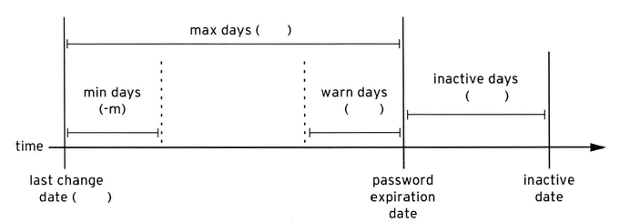

การบริหารจัดการ Password Aging Policy
linux เก็บ password ไว้ในไฟล์ /etc/shadow และสามารถกำหนด password aging วันหมดอายุ password เป็นต้น โดยองค์ประกอบของ password ประกอบกัน สามส่วน
# cat /etc/shadow
...
office1:$6$fTAC9fug$Ps0n6voyUWdVk/QnInmbiVo8ZHo9q.NZIDen5IxPh1x.99UHqf6qlOU8SeC2deHuwAYFSPduR8caa5RHE9Zdr1:17482:0:99999:7:::
...
1 $6$ บ่งบอก ชนิดของ hash algorithm ว่าเป็นชนิด SHA-512
2 fTAC9fug เป็นค่า salt ที่ใช้สำหรับการ encrypt has เพื่อป้องกันไม่ให้ user สองคน มีปัญหาหากมีการตั้ง password ที่ ตรงกัน
3 Ps0n6voyUWdVk/ ค่า hash ที่ได้ encrypted hash เรียบร้อยแล้ว
การใช้งานคำสั่ง chage
# chage -l office1
Last password change : Nov 12, 2017
Password expires : never
Password inactive : never
Account expires : never
Minimum number of days between password change : 0
Maximum number of days between password change : 99999
Number of days of warning before password expires : 7
policy ต้องการ ให้ password มีอายุ 30 วัน แล้วต้องเปลี่ยน
# chage -M 30 office1
# chage -l office1
Last password change : Nov 12, 2017
Password expires : Dec 12, 2017
Password inactive : never
Account expires : never
Minimum number of days between password change : 0
Maximum number of days between password change : 30
Number of days of warning before password expires : 7
Policy ต้องการให้ user หมด อายุ ในวันที่ต้องการ chage -E YYYY-MM-DD username
# chage -E 2017-12-31 office1
# chage -l office1
Last password change : Nov 12, 2017
Password expires : Dec 12, 2017
Password inactive : never
Account expires : Dec 31, 2017
Minimum number of days between password change : 0
Maximum number of days between password change : 30
Number of days of warning before password expires : 7
Policy ต้องการให้ user เปลี่ยน password ทันทีที่มีการ login
# chage -d 0 office1
# chage -d 0 office1
[root@localhost ~]# chage -l office1
Last password change : password must be changed
Password expires : password must be changed
Password inactive : password must be changed
Account expires : Dec 31, 2017
Minimum number of days between password change : 0
Maximum number of days between password change : 30
Number of days of warning before password expires : 7
ทดสอบโดยให้ su - office1 ก็จะถูกบังคับให้เปลี่ยน
[vagrant@localhost ~]$ su - office1
Password:
You are required to change your password immediately (root enforced)
Changing password for office1.
(current) UNIX password:
